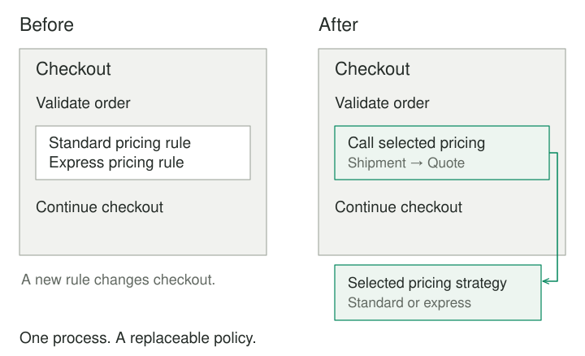
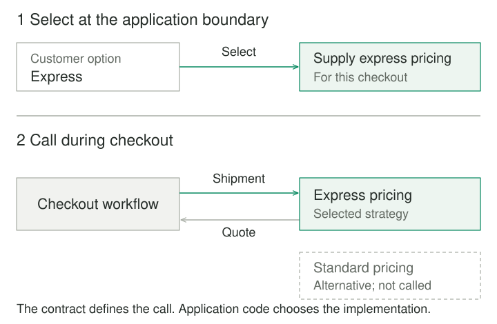

Strategy
Make a varying algorithm or policy explicit and replaceable behind a common contract.
Purpose and problem
A delivery service offers standard and express shipping. Both options take the same shipment details and return a price, but they calculate it differently. The checkout workflow contains the rules for both, alongside order validation, payment, and confirmation. A new shipping option means editing that workflow again.
The difficulty is not the existence of a conditional. It is that delivery pricing changes for reasons unrelated to the rest of checkout. Pricing experiments and order-processing changes now touch the same component. Testing one rule may require setting up a workflow that has little to do with it.
Strategy gives that variation its own boundary. The surrounding process can remain stable while a selected collaborator supplies the algorithm.
Core idea
Keep the process; make its policy replaceable.
The workflow describes what it needs: calculate a delivery quote from a shipment. Each pricing strategy fulfills that contract with its own algorithm. A caller supplies the appropriate strategy, and the workflow calls it without knowing the details of the calculation.

The classical object-oriented form uses a strategy interface and concrete strategy objects. A language with first-class functions can express the same design by passing a function. The important feature is a meaningful, interchangeable responsibility.
How it works
There are three responsibilities. The context runs the surrounding process. The strategy performs the varying calculation. A caller or composition point selects and supplies the strategy. Choosing an algorithm and executing it are separate decisions.
For delivery pricing, checkout is the context. Its pricing contract accepts a shipment and returns a quote with an amount and currency. Standard and express pricing are alternative strategies. The checkout request determines which option the customer selected, and application wiring supplies the corresponding implementation.

A shared signature is only part of the contract. All implementations must agree on what the inputs mean, what the result promises, and how failures are represented. One strategy returning euros and another returning cents would be incompatible even if both returned an integer. A strategy that purchases postage would also violate a contract that promises only a quote.
Changing strategies at runtime is possible when the application needs it, but it is not required. Supplying one algorithm when the application starts can already establish a useful boundary.
Worked example
Delivery pricing with a stable checkout step
This small Python example keeps two pricing rules behind one callable contract. Amounts use integer euro cents. The shipment's billable weight is a positive whole number of kilograms, rounded up and validated before this step. The prices are invented teaching values.
from dataclasses import dataclass
from typing import Callable
@dataclass(frozen=True)
class Shipment:
billable_kg: int
@dataclass(frozen=True)
class Quote:
amount_cents: int
currency: str = "EUR"
Pricing = Callable[[Shipment], Quote]
def standard(shipment: Shipment) -> Quote:
return Quote(500 + 100 * shipment.billable_kg)
def express(shipment: Shipment) -> Quote:
return Quote(900 + 200 * shipment.billable_kg)
def checkout(shipment: Shipment, price: Pricing) -> str:
quote = price(shipment)
return f"Delivery: {quote.amount_cents} cents {quote.currency}"
pricing_by_option = {"standard": standard, "express": express}
selected = pricing_by_option["express"]
print(checkout(Shipment(billable_kg=3), selected))
# Delivery: 1500 cents EUR
Before the separation, checkout would inspect the shipping option and contain both formulas. Here it receives a calculation and uses its result. A real checkout would continue with its other responsibilities; this example shows only the pricing step. For the same three-kilogram shipment, selecting standard pricing produces a quote of 800 cents.
Adding a depot-collection policy requires another compatible function and an entry in the selection map. It does not require changing the checkout function. Something still has to choose the policy: Strategy localizes that choice rather than eliminating it.
The boundary also makes tests more focused. Test each pricing rule with controlled shipment values. Test checkout with a supplied calculation that returns a known quote. Separately test that each customer option selects the intended policy. Those are different responsibilities, and a correct formula cannot compensate for an incorrect selection rule.
If a future policy calls a carrier's remote API, its latency and failure behavior must fit the contract. Introducing asynchronous results or unavailable quotes may require an explicit change to the contract and the workflow. Sharing a function shape does not make those differences disappear.
Ranking search results
A search workflow retrieves candidate documents, then asks a ranking strategy to order them. One strategy favors recency; another uses a relevance score. The same candidates can be passed through both algorithms for comparison without rewriting retrieval.
The contract must say whether ranking preserves every candidate or also filters results. If one implementation removes documents while another merely changes their order, the surrounding pagination and result counts may become misleading. Define that behavior before treating the algorithms as alternatives.
When to use it
Strategy is useful when an algorithm has become a distinct responsibility: several meaningful alternatives exist, the policy changes independently, or different callers need different implementations. Pricing, ranking, compression, and validation policies can provide this kind of variation.
A clear conditional is often enough when the entire choice is small and stable. Two short expressions do not automatically justify an abstraction. Look for a responsibility that deserves its own name and contract, rather than counting branches or trying to remove every conditional.
Tradeoffs and common mistakes
The selection logic needs a home. Moving formulas out of checkout helps only if policy selection remains understandable. Spreading customer-option checks across many callers recreates the original problem. Keep selection at an appropriate request, configuration, or composition boundary.
A vague interface hides differences. An arbitrary dictionary of inputs and an unspecified result can make every algorithm appear compatible. Prefer a narrow contract with explicit units, outputs, and failure behavior. Different guarantees may call for different contracts.
More components can make a small rule harder to follow. A function is often sufficient. Create strategy objects when they need configuration, dependencies, or a meaningful lifecycle. Neither separate files nor an inheritance hierarchy are requirements of the pattern.
Mutable strategies need ownership rules. A strategy that stores request-specific state can leak data between callers when shared. Stateless functions or immutable objects are easy to share; stateful implementations require deliberate lifetime and concurrency decisions.
An interchangeable interface does not imply an equivalent outcome. Changing a search ranker or a price policy changes behavior users experience. Strategy isolates the implementation decision; the application still needs to assess its consequences.
Related patterns
State also delegates behavior through a replaceable collaborator. It organizes behavior around an object's lifecycle conditions and transitions. Strategy normally represents an algorithm or policy selected for a task.
Template Method holds an algorithm's skeleton in a base class and varies selected steps through subclassing. Strategy supplies behavior through composition, including a function when that is sufficient.
Bridge separates two dimensions that vary independently, such as a family of high-level controls and a family of device implementations. Strategy focuses on replacing a policy used by a context. A larger design may use both.
Sources
Strategy is one of the 23 patterns in Gamma, Helm, Johnson, and Vlissides, Design Patterns: Elements of Reusable Object-Oriented Software. The delivery prices, code, search example, and illustrations here are original educational examples.